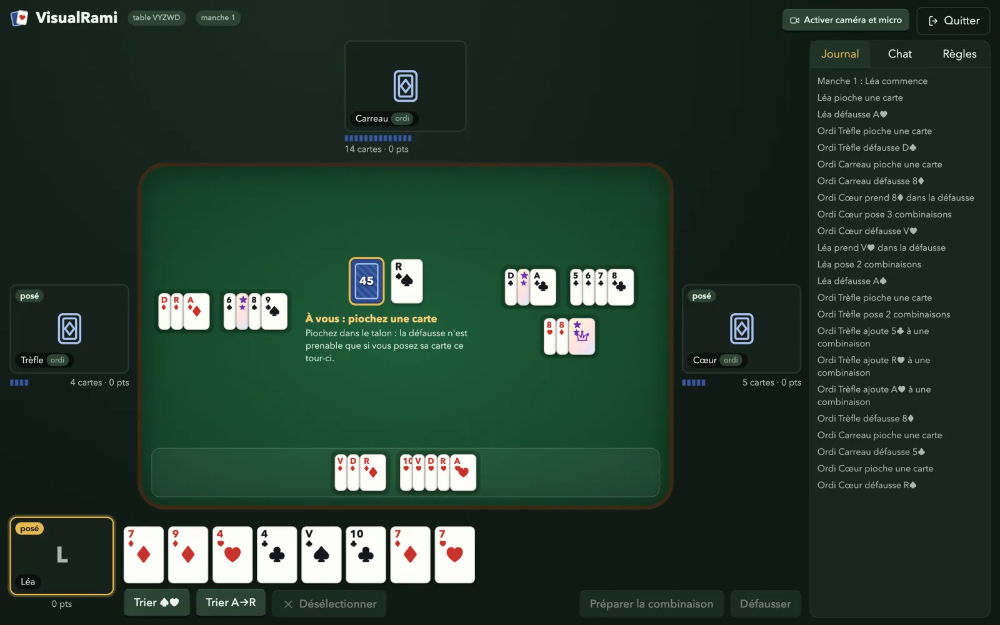

VisualRami
Le Rami 51 d'une maison à l'autre.
Jusqu'à six joueurs autour d'un même tapis, chacun avec sa caméra et son micro. Un code de table à envoyer par message, rien à installer, pas de compte.

La partie en 25 secondes.
Avant de créer une table : ce que c'est, ce que ça demande, ce que ça donne.
De l'envoi à la partie, trois gestes.
Aucune inscription. Le code de la table et le prénom suffisent, aujourd'hui comme dans une semaine.
Créez la table
Votre prénom, les règles de la table (51 points et tierce franche par défaut), et c'est ouvert. Vous recevez un code de cinq lettres.
Envoyez le code
Par message, par téléphone ou par lien. Chacun entre son prénom et s'assoit. Pas de compte, pas de mot de passe.
Asseyez-vous
Chaque joueur a sa place autour du tapis, avec sa vidéo s'il l'active. Une partie interrompue reste ouverte sept jours.
Les règles, en français.
Le vocabulaire est celui des joueurs : talon, défausse, tierce franche, brelan, carré, poser, manche.
- La table. 2 à 6 joueurs, deux jeux de 52 cartes et 4 jokers, 14 cartes chacun.
- Un tour. Piocher, poser si l'on peut, défausser une carte.
- La défausse. On n'y prend la carte du dessus que si on la pose dans le tour. Sinon, le talon.
- La première pose. Au moins 51 points, dont une tierce franche (une suite sans joker). Les deux réglages se changent à la création de la table.
- Après la pose. On complète les combinaisons de tous les joueurs et on reprend un joker en jouant la carte qu'il remplace.
- La fin de manche. Elle s'arrête sur la dernière défausse. Les autres comptent leur main, deux fois s'ils n'ont rien posé. Le plus petit total gagne.
- Seul ? Un à trois ordinateurs prennent place à la table, au niveau facile ou moyen. Ils jouent avec la même vue que vous : jamais les cartes des autres.
Le lancer chez soi.
VisualRami est un projet libre : un serveur Node et une application web. Il tourne sur votre machine, ou sur n'importe quel hébergeur qui accepte les WebSockets.
$ git clone https://github.com/vincentlauriat/VisualRami.git $ cd VisualRami $ npm install && npm run build $ npm start
La table s'ouvre sur http://localhost:3000. La caméra et le micro exigent localhost ou une adresse en HTTPS ; le README explique comment servir une table sur le réseau local.
Les tables sont conservées dans un dossier data/. Un joueur qui revient avec le code et son prénom retrouve sa place pendant sept jours.